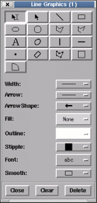

Using this window you can draw, lines, rectangles, polygons, polylines, ellipses, columns, rows, pixels, etc. and add text. For instance to draw an ellipse over your image press the button and then drag the cursor over your image.
When you release the mouse button two little squares will appear on the ellipse. These are known as "grips" and whenever they appear on a graphic they indicate that it is "selected" and allow you to reshape the graphic. In this case if you put the cursor on one and then drag it you can re-orient and re-size the ellipse. You can also just move a graphic by dragging anywhere in its interior or edge.
Selected graphics can have their other properties changed, such as the outline width and colour, fill colour and stipple (a bitmap used with the fill colour). Selected text can have its font changed.
To remove a graphic select it (so that its grips appear) and press the "Delete" button. To remove all graphics press the "Clear" button.
Overlay graphics can be printed, together with the image, by using the "Print..." option of the "File" menu. They can also be saved to a disk file and re-drawn at a later time using the "Save graphics..." and "Load graphics..." items in the "Graphics menu".
One further point to note is that most of the interactive overlay graphics created by other toolboxes uses the same mechanisms, so you can change the the drawing properties of other toolboxes using this toolbox, and more usefully clear their graphics from the image.